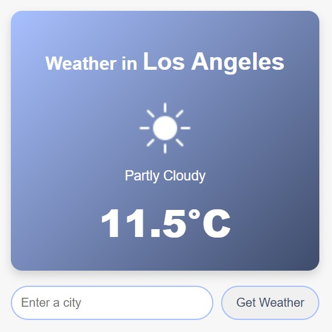
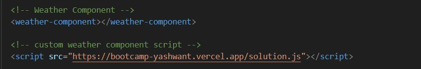
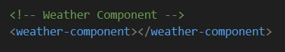

Exercise - 2: HTML component (weather-component)
Approach
- used an API to fetch weather
- Created a html element for that API
- Tested it with a local project. Imported the element as a local url
- Hosted the weather component in Vercel. Made it open for all.
- Imported the hosted url (weather-component) in a script and used it.
How to use this component
- Include the script in your project
<script src="https://bootcamp-yashwant.vercel.app/solution.js"></script>
- Use the weather element as mentioned below
<weather-component></weather-component>
UI/UX

Component (Usage)

